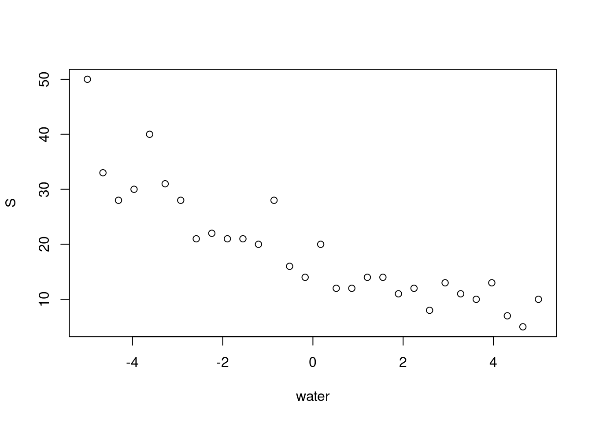
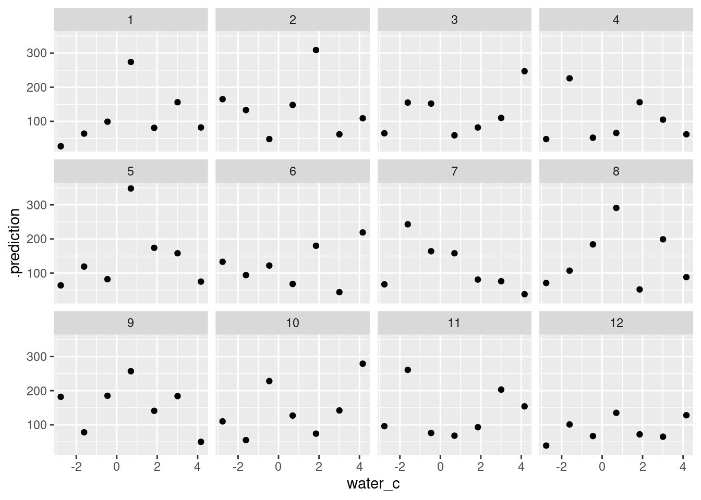

In this exercise we’ll look at two ways to think about fixing overdispersion in a count model, and also practice making prediction figures to diagnose a model.
What is the question?
Let’s write a model to answer the question:
How does the total abundance of the mite community change as water content increases?
Observation-level random effects: Mite abundance
Here’s a partially complete model for abundance over time
Simulate from this model, and look at your simulations to decide on a reasonable prior for the data.
SOLUTION
n <-30water <-seq(from =-5, to =5, length.out = n)b0 <-rnorm(1, mean =log(17), sd = .3)b1 <-rnorm(1, mean =0, sd = .2)S <-rpois(n, lambda =exp(b0 + b1*water))plot(water, S)

Data preparation & visualization
First we need to load and prepare the data:
data(mite, package ="vegan")data("mite.env", package ="vegan")# combine data and environmentmite_data_long <- mite |> tibble::rownames_to_column(var ="site_id") |>bind_cols(mite.env) |>pivot_longer(Brachy:Trimalc2,names_to ="spp", values_to ="abd")
First let’s transform the mite dataset into a dataframe of total community abundance (N) per site. We’ll also standardize the water content while we’re at it:
Model Info:
function: stan_glm
family: poisson [log]
formula: N ~ 1 + water_c
algorithm: sampling
sample: 4000 (posterior sample size)
priors: see help('prior_summary')
observations: 70
predictors: 2
Estimates:
mean sd 10% 50% 90%
(Intercept) 4.9 0.0 4.9 4.9 5.0
water_c 0.0 0.0 0.0 0.0 0.0
Fit Diagnostics:
mean sd 10% 50% 90%
mean_PPD 139.7 2.0 137.1 139.7 142.3
The mean_ppd is the sample average posterior predictive distribution of the outcome variable (for details see help('summary.stanreg')).
MCMC diagnostics
mcse Rhat n_eff
(Intercept) 0.0 1.0 2660
water_c 0.0 1.0 2369
mean_PPD 0.0 1.0 3487
log-posterior 0.0 1.0 1491
For each parameter, mcse is Monte Carlo standard error, n_eff is a crude measure of effective sample size, and Rhat is the potential scale reduction factor on split chains (at convergence Rhat=1).
Note that the water coefficient is quite positive – not very consistent with our figure!
Warning: Bulk Effective Samples Size (ESS) is too low, indicating posterior means and medians may be unreliable.
Running the chains for more iterations may help. See
https://mc-stan.org/misc/warnings.html#bulk-ess
Warning: Tail Effective Samples Size (ESS) is too low, indicating posterior variances and tail quantiles may be unreliable.
Running the chains for more iterations may help. See
https://mc-stan.org/misc/warnings.html#tail-ess
Another way to model variable count data is via the Negative Binomial distribution. Read more about the distribution on Wikipedia, check the way the distribution is parameterized in brms , and look at what link family are used via ?brms::brmsfamily which is also online here
mite_negbin_stan_prior <-stan_glm( N ~1+ water_c,data = mite_community_abd,family =neg_binomial_2(link ="log"),prior_intercept =normal(2.8, 0.3, autoscale =FALSE),prior =normal(0, 0.2, autoscale =FALSE),prior_aux =normal(3, 1, autoscale =FALSE), # shape (log scale in brms ≈ aux in rstanarm)prior_PD =FALSE,refresh =0)mite_community_abd |> modelr::data_grid(water_c =seq_range(water_c, n =7)) |> tidybayes::add_predicted_draws(mite_negbin_stan_prior, ndraws =12) |>ggplot(aes(x = water_c, y = .prediction)) +geom_point() +facet_wrap(~.draw)

Now run the model for real
mite_negbin_stan <-stan_glm( N ~1+ water_c,data = mite_community_abd,family =neg_binomial_2(link ="log"),prior_intercept =normal(2.8, 0.3, autoscale =FALSE),prior =normal(0, 0.2, autoscale =FALSE),prior_aux =normal(3, 1, autoscale =FALSE), # shape (log scale in brms ≈ aux in rstanarm)prior_PD =FALSE,refresh =0)
Warning: Found 3 observation(s) with a pareto_k > 0.7. We recommend calling 'loo' again with argument 'k_threshold = 0.7' in order to calculate the ELPD without the assumption that these observations are negligible. This will refit the model 3 times to compute the ELPDs for the problematic observations directly.
Warning: Found 64 observations with a pareto_k > 0.7. With this many problematic observations we recommend calling 'kfold' with argument 'K=10' to perform 10-fold cross-validation rather than LOO.
Warning: Found 1 observation(s) with a pareto_k > 0.7. We recommend calling 'loo' again with argument 'k_threshold = 0.7' in order to calculate the ELPD without the assumption that these observations are negligible. This will refit the model 1 times to compute the ELPDs for the problematic observations directly.